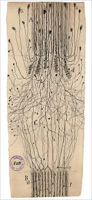
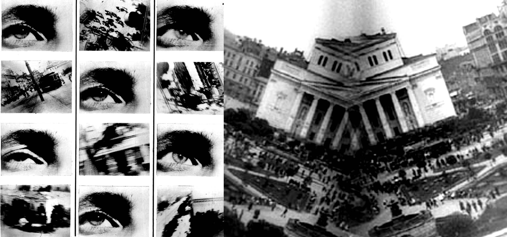
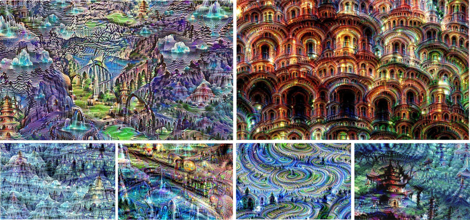
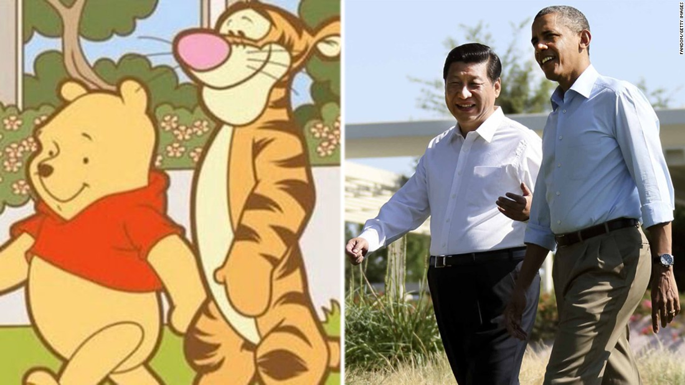
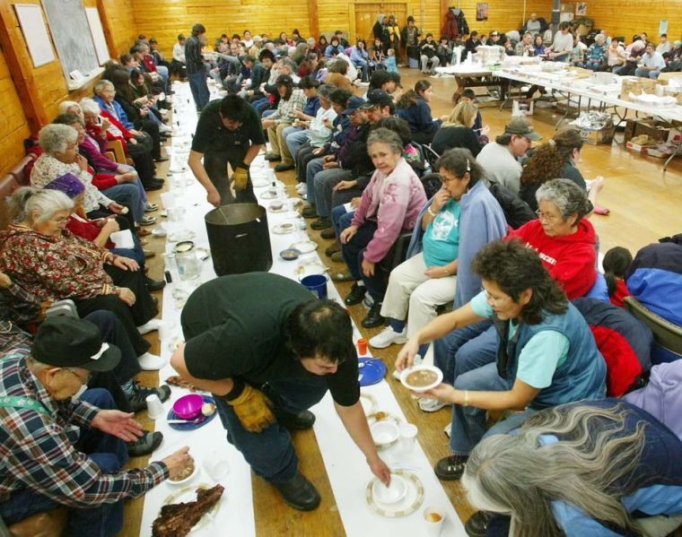

Art and Creativity¶
15. Artists and Scientists¶
KEY QUESTIONS
Is it possible to articulate a scientifically-grounded description of the activity of a creative artist?
What do artists and scientists have in common?
How are they different?
WHY DOES THIS MATTER?
Artistic thinking seems fundamentally different from scientific thinking; the type of people who work in the sciences and in the arts seem fundamentally different. Yet great original scientists such as Tesla, and great artists such as Leonardo appear to have much in common.
Scientists create abstractions which describe the world with equations and models. Artists create abstractions which describe the world in paint, light, sound, movement.
Both produce multiple descriptions of the world, and generating new possibilities for looking at the world. Artists are important because they show us how to look at the world differently.
HOW CAN I FIND OUT MORE? https://www.youtube.com/watch?v=jt218332bRQ

16. Are you an artist?¶
KEY QUESTIONS
How many times do you take photographs on your phone?
How many times do you post photographs on Social Media (VK, Facebook, etc)
What are you doing when you do this?
How many descriptions of your life are on social media?
WHY DOES THIS MATTER?
If artistic thinking is about creating multiple descriptions of reality, then we are more artistic than we might think!
Every time we take a photograph we create a description. In posting on social media, we add that description to our other descriptions which are there. We also add it to the descriptions of others.
However, there is a difference between what we do and what an artist might do: artists assemble multiple descriptions of things so that they become coherent.
Artists find the common pattern between different descriptions. Artistic skill involves manipulating multiple descriptions to reveal their common pattern.
Finding a common pattern is a way of speaking about a deeper sense of reality.
WHERE CAN I FIND OUT MORE? https://tinyurl.com/yajfabnj
17. Multiple Descriptions in Video¶
KEY QUESTIONS
If you want to learn to fix a leaking tap or a fault in your car, do you look for some text on Wikipedia or do you look for a YouTube video?
When you watch a youtube video, what happens to you over time?
At a key moment of surprise in a video, what are the elements which cause the surprise?
WHY DOES THIS MATTER?
Video presents multiple descriptions of the world over time.
The multiple descriptions presented by video have many dimensions and change over time.
Edgar Morin, in his book “Cinema and the imaginary man” [@morin_cinema_2005], details the different descriptions that the cinema presents. These include:
the way that light and shadow changes
the way that the size of objects change
the way that the sound and music of a movie changes

newpage
the way that speech changes
the way that the camera moves
the cutting of one shot to the next
… and so on …
Morin’s different dimensions are related. In asking how YouTube communicates multiple descriptions over time, we can ask about the structural relationship between its different elements.
Many of these issues of the moving image were considered in Russian cinema - particularly in the work of Vertov and Eisenstein.
WHERE CAN I FIND OUT MORE? https://www.youtube.com/watch?v=ibhXQsZBT8k
18. Multiple Descriptions in Poetry¶
KEY QUESTIONS
How is poetry like video?
How is poetry like science?
How does a poet describe something which has no name - like a feeling?
WHY DOES THIS MATTER?
Text appears to be a much less rich medium than video. However, in poetry, text can be used to convey deep things which lie beyond any individual word.
The way text is able to do this is by layering different descriptions of something on top of one another.
In poetry, descriptions are not just in the words themselves, but in their rhythm and in the way that they rhyme.
With the kind of overlaying of descriptions Ezra Pound describes how it is that words are assembled from other words. To define ‘red’, for example, Pound asks
“How can the poet to do it in a picture that isn’t painted in red paint? He puts (or his ancestor put) together the abbreviated pictures of
ROSE CHERRY IRON RUST FLAMINGO
Pound argues that this
is very much the kind of thing a biologist does (in a very much more complicated way) when he gets together a few hundred or thousand slides, and picks out what is necessary for his general statement. Something that fits the case, that applies in all of the cases.”
WHERE CAN I FIND OUT MORE? https://www.youtube.com/watch?v=95n28deaPFg
19. Computer-generated Objects¶
KEY QUESTIONS
Could a computer be an artist?
Much modern art now uses computers - what do the computers contribute to artistic expression?
What is the difference between a computer-generated object and a natural object?
WHY DOES THIS MATTER?
The computer generates lights on a screen to create virtual ‘objects’. These virtual objects can be easily manipulated, and algorithms can generate infinite variations of an object
Human beings point at computer-generated objects and in the process reveal something about themselves in relation to them. Since there are many different computer-generated objects, there are many possible ways in which individuals might reveal something about themselves.
With 3D printing, computers are able to create an increasing array of physical objects, including paper documents, 3D printed models and even buildings.

Practical uses of computer-generated objects include the use of adaptive algorithms to maximise the performance of a vehicle (for example, ‘genetic algorithms’), or the use of shared 3D architectural plans in the design of a building (a technology known as ‘Building Information Modelling’)
Virtual reality is another example of computer-generated objects which provide multiple descriptions of the world.
Visualisations (or ‘visual analytics’) of data can also provide many different descriptions of reality, highlighting particular features of the data about which people can talk.
WHERE CAN I FIND OUT MORE? https://www.youtube.com/watch?v=k9NVJyV-yoM
20. Emoji communication¶
KEY QUESTIONS
Why do people send smileys, or WeChat stickers to each other in communications?
What is the difference between using a word for something and a sticker?
If you were to respond to this question with a sticker, what would it be?
WHY DOES THIS MATTER?
Since the advent of texting, communications have been increasingly augmented with pictures and symbols.
Each sticker has particular structural properties which are presented in a single moment. Many stickers are animations, and present information over time. The structure of single moment is what is called synchronic and the unfolding over time is called diachronic 
Conversations work in a similar way: they comprise diachronic and synchronic aspects, each contributing multiple descriptions which are coordinated throughout the process.
Combining stickers and words creates complex mixtures of different elements all of which are saying similar things in different ways.
When you send stickers to each other, are you being an artist?
21. Creativity and Happiness¶
KEY QUESTIONS
Does being creative make you happy? If so, why?
Is mental illness related to creativity?
When you express a feeling that is inside, what changes occur in your environment?
When you express a feeling that is inside, what changes occur in you?
WHY DOES THIS MATTER?
The creative process is one of the highest attainments of the human intellect. Within hierarchies of learning such as Bloom’s taxonomy [@bloom_taxonomy_1956], we find ‘creativity’ at the top of a range of intellectual achievement from memory recall at the bottom to synthesis and analysis in the middle.
In psychoanalytical approaches to the creative process, it has been suggested that creativity is a state of being which connects the Ego (the self) with the Id (the unconscious) in a continual process [@read_education_1958; @ehrenzweig_hidden_1968; @milner_not_2010].
Mental illness is characterised as “creativity gone wrong”[@ehrenzweig_hidden_1968].
This can be compared to Freud’s therapeutic process which is conversationally-oriented (a ‘talking cure’), drawing out utterances from the patient where the ‘primary process’ material of dreams is summoned into the world of the Ego and language.
The cure for psychological trauma through this conversational process lies in the articulating of psychodynamic blockages and bringing them into the therapist-patient conversation.
 Labyrinth (sequential
structure) of creative search. The creative thinker must move forward on
a broad front, revealing many options. He should get a comprehensive
look at the whole structure of the way forward, without being able to
focus on any one opportunity.
Labyrinth (sequential
structure) of creative search. The creative thinker must move forward on
a broad front, revealing many options. He should get a comprehensive
look at the whole structure of the way forward, without being able to
focus on any one opportunity.
22. Mental Process, Individuation and Successful people¶
KEY QUESTIONS
What is it to know who you are?
How have successful people, across all fields, developed such a strong sense of self-identity which gives them confidence to act in the world?
What is the balance between mind and action among successful people?
WHY DOES THIS MATTER?
‘Individuation’ is Jung’s term for the process whereby the self emerges from undifferentiated unconciousness.
The essential concept of a dynamic relation between the components of consciousness is similar to Freud’s relation between Ego, Id and Superego.
What happens between the therapist and the patient in psychoanalysis is a process of drawing-out things from the subconscious into consciousness, through turning subconscious phenomena into communications with the therapist. Психический процесс, индивидуализация и успешные люди
Rebalancing is essential to individuation: it is what happens when the uncertainty of the psyche is balanced with the management of uncertainty of social relations to the point where the individual can see themselves as ‘whole’ and distinct from other individuals and other things.
In Jungian psychoanalysis, individuation is assisted through recognition of fundamental archetypes in what Jung calls the collective unconscious.
23. Uncertainty¶
KEY QUESTIONS
When you are uncertain about something, what do you do?
To what extent is uncertainty in the individual mind, and to what extent is it in the social environment?
Why in conversation important for the management of uncertainty?
WHY DOES THIS MATTER?
Uncertainty is present in the individual mind - nobody is entirely sure of everything
Uncertainty is also present in the social environment: because nobody is sure of anything, there is much argument about the meaning of things, political issues, scientific knowledge, and so on.
Systems modelling techniques can help in exploring the relationship between the management of uncertainty in the psyche and the management of uncertainty in the environment.
Drawing the uncertainty management process in this way helps to connect both the psychodynamic mechanism of Freud with the relational mechanism of Bowlby in a coherent way. It further suggests that the damage to attachment relations will inevitably have psychodynamic effects.
The struggle to manage uncertainty with regard to proximity to a caregiver must be related to some deeper uncertainty concerning the undifferentiated experience of a baby (and indeed, the mother), and the more concrete ‘categories’ of experience which arise whereby ‘proximity’ becomes a thing over which the child attempts to exercise control. In this way, the undifferentiated subconscious of the baby and the mother, and the mechanism by which the uncertainty of the subconscious is managed form a coherent part of the attachment process.
24. Generosity¶
KEY QUESTIONS
How might generosity help to manage uncertainty?
Are artists generous in the way they express themselves?
Is being open in the way that emotions are expressed similar to being generous?
WHY DOES THIS MATTER?
Imagine giving a present to someone: a gift is a highly complex object open to many interpretations. It’s meaning is often ambiguous. It is this ambiguity which makes it powerful.
When exchanging something for money, the meaning and value of the exchange must be clear to all who participate in it. A gift, however, is an object which functions by revealing something of the inner worlds of the giver and the receiver.

A gift is an invitation to reveal individual uncertainty to one another, bringing it into the social domain where conversation can produce new dynamics which maintain social cohesion.
Anthropologist George Bataille [@bataille_accursed_1991], thought deeply about gifts. Influenced by Mauss’s concept of potlatch [@mauss_gift:_2011], Bataille argued that gifts within communities were processes of acknowledging the fundamental uncertainties of existence.
In giving, Bataille argues that squander or waste was then the principal act, and in primitive society it took the form of human sacrifice and lavish feasts.
In modern society it can take the form of exuberant behaviour - from art to football matches.